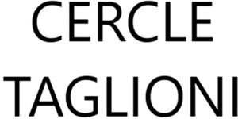

Trade Mark Journal No.2025/010 7 March 2025
WO0000001827026 (35,36,41)
Office of origin: France
Date of International Registration:10 October 2024
Date of designation in the UK:
10 October 2024

International priority date claimed: 12 April 2024
(France)
(5046862)
- Class 35
- Professional business consultancy; commercial management and administration of socio-educational or cultural programs; administrative services relating to the promotion, coordination, development and supervision of community and cultural services; promotional and advertising services; public relations; commercial lobbying services; personnel recruitment services; compilation of information into computer databases; computer file management; information and consultancy services concerning all the aforesaid services, including such services provided online from a computer network or the Internet; business management of performing artists; search and selection services for performing artists, namely, auditions for artists [selection of personnel]; document reproduction; auctioneering; all the aforesaid services provided in the field of culture, opera, ballet, dancing or lyrical music.
- Class 36
- Fundraising for charitable purposes; management and monitoring of charitable funds; organization of fundraising; organization of fundraising activities and events; philanthropic services concerning financial donations; financial services, namely, providing funding for educational scholarships, cultural or artistic scholarships, providing funding for educational, cultural and/or intercultural programs, providing funding for the production of artistic works, more specifically operas, ballets, concerts and audiovisual works; raising capital, investment of capital; mutual funds, investment of funds; sponsorship services; cultural sponsorship services; all the aforesaid services provided in the field of culture, opera, ballet, dancing or lyrical music.
- Class 41
- Organization and management of award ceremonies; education, training, entertainment; sporting and cultural activities; publication of books, of texts; publishing of books, magazines; organizing contests, prizes, competitions with respect to education, works of art, cultural goods, books, entertainment; organization of lotteries (entertainment); organization and conducting of seminars, symposiums, colloquiums, conferences, congresses; organization of exhibitions for cultural or educational purposes; practical training in the arts; orchestra services; academies (education), entertainer services; rental of show scenery; music and dance education, music and dance schools; producing and distributing sound recordings; organization of shows (impresario services), organization of artistic events; cultural information services; producing and presenting shows, theatrical performances, concerts, operas, ballets and cultural events; producing and distributing films and audiovisual and television programs; ticketing and booking services for shows and other entertainment events; party planning (entertainment); all these services provided in the field of culture, opera, ballet, dancing or lyrical music.
AROP Association pour le Rayonnement de l’Opéra national de Paris
Representative: Monsieur HORN Julien DE GAULLE FLEURANCE & ASSOCIES, 9 rue Boissy d'Anglas, F-75008 Paris, FRANCE